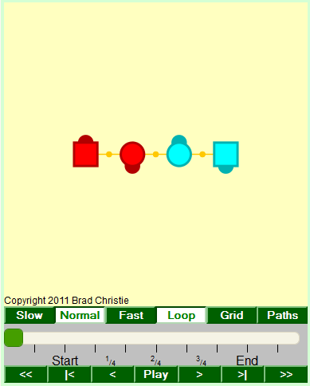

How to use TAMinations
This example to the right is just a snapshot image, not a working animation. The square dancers are boys, and the round ones are girls. The orange connections are handholds.
I try to follow the Callerlab definitions as closely as possible. Some differences you might see are:
- The dancers may adjust a bit to finish in standard lines, waves, columns, etc. This is what real dancers do as well.
- I try to match the Callerlab timing with the number of tick marks between Start and End, but you might find a few differences.
- Handholds are drawn very simply and don't show any styling - hands up, couples, forearm, are all shown the same. Some handholds might not start or end exactly when real dancers would.
TAMination Controls and Display
-
Drag this slider to vary the speed when the animation is
playing. Bottom is snail-paced, top is hot hash.
(The SVG animation has Slow/Normal/Fast buttons instead of a slider.) - Multi-part calls have the different parts numbered here. The tick marks show the beats. All animations start on beat 2.
- Click to go to the start of the animation.
- Click to go to the start of the current part.
- Click to go backward a small amount.
- Click to play or stop animation.
- Click to go forward a small amount.
- Click to go to the start of the next part.
- Click to go to the end of the animation.
- Square dancers are "boys", circles are "girls". The dark hemisphere show the facing direction. (So this example shows right-handed ocean waves.)
- These orange connectors are handholds. There's no styling - hands up, couples, forearm etc. are all drawn the same.
Special Features
You can access some fun "extras" by right-clicking in the Java animation, or selecting the additional buttons on the SVG animation.
- Loop Check to automatically restart the animation when playing.
- Grid Check to show a grid with 1-dancer-size boxes.
- Paths Displays the route dancers take as colored lines.
- Hexagon One dancer is added for every 2 in the starting formation, so 4 couples becomes 6 couples. There's an excellent article on this by Clark Baker, and more info and graphics by Justin Legakis
- Bi-gon This variation removes half the dancers, so 4 couples becomes 2. A great article by Sue Curtis is required reading if you want to attempt to understand this.
- Barstool This fixes the position of one dancer. The barstool dancer can turn but not move. All the other dancers adjust by moving around the barstool. Clark Baker has a good explanation . In some cases you'll also want to enlarge the dance floor.
- Compass The complement to barstool - one dancer's facing direction is fixed, and the other dancers have to rotate the setup to adjust. I don't know if this has actually been done, it might not be practical especially for 4 couples.
